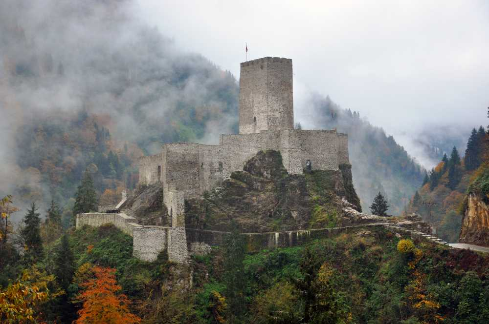
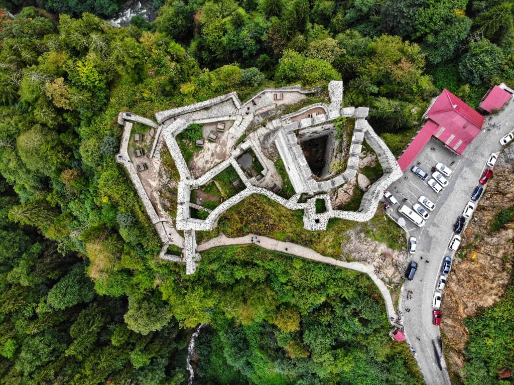

Zil Kalesi
Zilkale ya da asıl adıyla Zirkale, Rize'nin Çamlıhemşin ilçesi sınırlarında, Fırtına Deresi Vadisi’nde yer alan, ilk inşa tarihi kesin olarak bilinmeyen bir kaledir.
14. veya 15. yüzyılda inşa edilen kale, 1800'lü yılların sonuna kadar kullanılmıştır. Sekiz burç ve bir gözetleme kulesinden oluşur. Savunma hendeği durumundaki Zil deresine merdivenle inilir. Kale, 1. derece arkeolojik sit alanı içerisindedir.

Yapım tarihi kesin olarak bilinmeyen kale, Britanyalı tarihçi Anthony Bryer'ın tahminine göre Trabzon İmparatorluğu döneminde bizzat merkezi yönetimce ya da İmparatorluğa bağlı yerli derebeyleri (mesela Zil Kale için Hemşin derebeyi Arhakel) tarafından yapılmış olmalıdır. Karadeniz Kıyıları Tarih ve Coğrafyası adlı eseriyle tanına Bıjışkyan “Kayalığın üzerinde bulunan ve Zilkale denilen eski bir kalenin içinde insana şaşkınlık veren kemerli binalar ve büyük bir kule vardır. Kalenin alt ucu, tepelerin üzerinde başka kalelere ve eski bir kilise kalıntıları bulunan Fırtına Deresi’ne kadar uzanır” diyerek gözlemlerini anlatmış; ancak, kale tarihi hakkında bilgi vermemiştir.
Asıl adı "Aşağı Kale" anlamına "Zir kale" iken halkın ağzında "Zil Kale" halini almıştır. Kale, aynı yörede bulunan Varoş Kale ve Pazar Kalesi ile ilk bakışta aynı elden çıkmış ve aynı amaçla yapılmış izlenimi verir.
Bayburt’a ulaşan önemli bir Orta Çağ kervan yolu üzerinde güvenliği sağlayan kale, Cenevizliler başta olmak üzere Rumlar ve Osmanlılar tarafından 1800'lü yılların sonuna kadar kullanıldı. 1871 tarihli Trabzon vilayeti salnamesinde yörede "Kale-i Bala" ve Zir namlarında iki harap kale bulunduğu belirtilmiştir. 1979 yılında kalede bulunan 26 cm uzunluk ve 4-4 ½ cm çapında pirinç döküm iki el topu Trabzon Müzesi’ne getirilerek 440 (79-1-1) ve 441 (79-1-2) no.lar ile envantere kayıt edilmiştir.
Kale, 2008-2010 arasında restorasyon gördü. Restorasyondan sonra turistik bir cazibe kazanmıştır. 2013 yılında piyanist Tuluyhan Uğurlu'nun verdiği konser, yapının bilinirliğini artırmıştır.

.png)